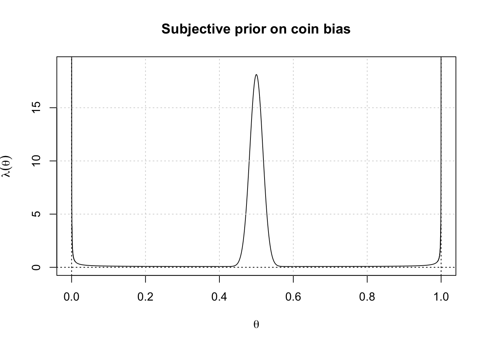
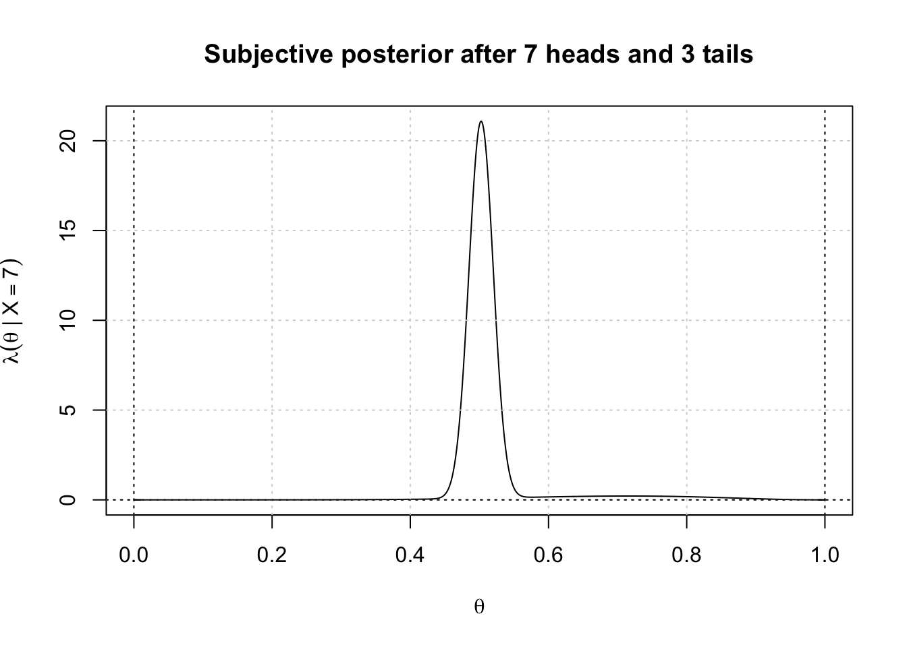
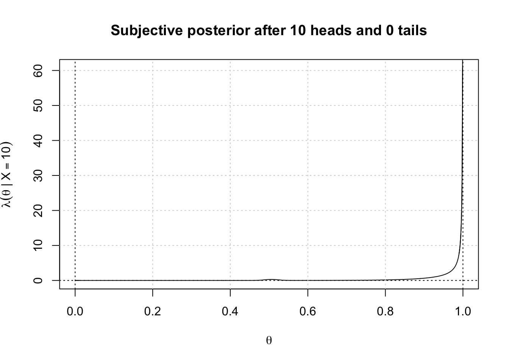
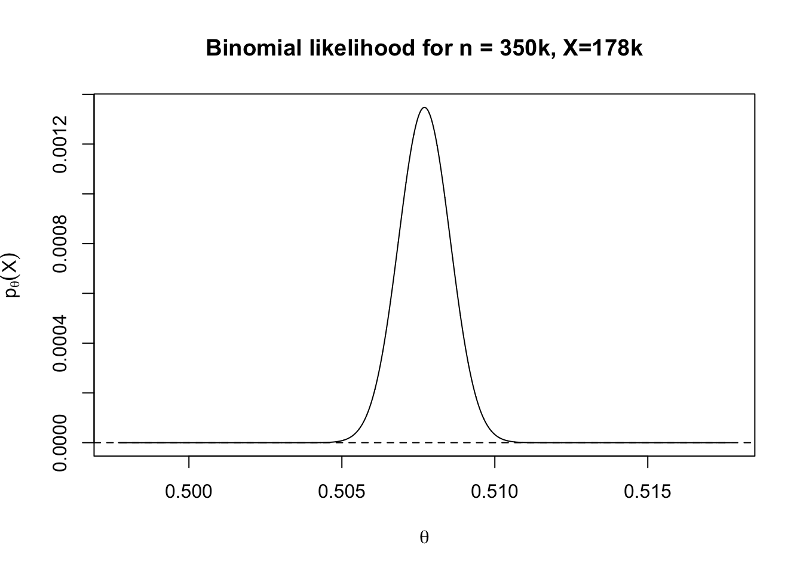
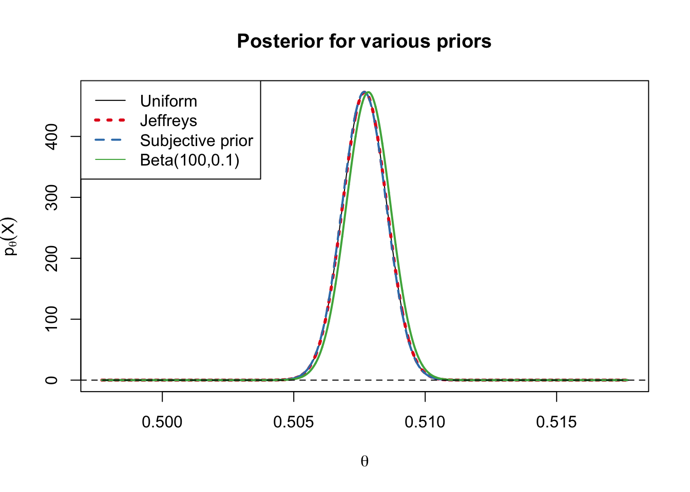
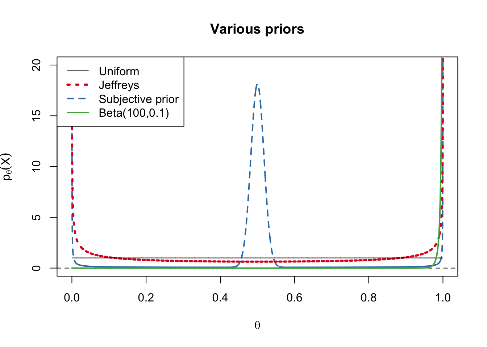

Interpretations of Probability and Sources of Priors
\[ \newcommand{\cB}{\mathcal{B}} \newcommand{\cF}{\mathcal{F}} \newcommand{\cN}{\mathcal{N}} \newcommand{\cP}{\mathcal{P}} \newcommand{\cX}{\mathcal{X}} \newcommand{\EE}{\mathbb{E}} \newcommand{\PP}{\mathbb{P}} \newcommand{\RR}{\mathbb{R}} \newcommand{\ZZ}{\mathbb{Z}} \newcommand{\td}{\,\textrm{d}} \newcommand{\simiid}{\stackrel{\textrm{i.i.d.}}{\sim}} \newcommand{\simind}{\stackrel{\textrm{ind.}}{\sim}} \newcommand{\eqas}{\stackrel{\textrm{a.s.}}{=}} \newcommand{\eqPas}{\stackrel{\cP\textrm{-a.s.}}{=}} \newcommand{\eqmuas}{\stackrel{\mu\textrm{-a.s.}}{=}} \newcommand{\eqD}{\stackrel{D}{=}} \newcommand{\indep}{\perp\!\!\!\!\perp} \DeclareMathOperator*{\minz}{minimize\;} \DeclareMathOperator*{\maxz}{maximize\;} \DeclareMathOperator*{\argmin}{argmin\;} \DeclareMathOperator*{\argmax}{argmax\;} \newcommand{\Var}{\textnormal{Var}} \newcommand{\Cov}{\textnormal{Cov}} \newcommand{\Corr}{\textnormal{Corr}} \newcommand{\ep}{\varepsilon} \]
1 Interpretations of Probability
In this lecture, we will examine more closely the interpretation of Bayesian inference, and the controversy that has at times surrounded it. But first, we must ask the question: Why do we model anything as random? Probability distributions have a crisp mathematical definition as normalized finite measures, but they have also been a very useful conceit in statistics — of both the frequentist and Bayesian varieties. But how do we justify attaching this mathematical definition to things in the real world?
There is a wide variety of candidate interpretations of probability, which you can find catalogued in the Stanford Encyclopedia of Philosophy’s entry on the subject. From the perspective of statistical practice, the most important distinction is arguably whether we are willing to assign probabilities to unknown parameters, or only to the data set. Methodologically, this has led to a break between Bayesians who argue we are on solid ground assigning probabilities to both \(\theta\) and \(X\), and frequentists who argue we should refrain from assigning probabilities to \(\theta\), and assign them only to \(X\).
1.1 Aleatory probabilities
Frequentists tend to adopt a more modest view that we should only assign a probability to the chance that an event will happen, and then only to certain kinds of events. Uncertainty about chance events happening is called aleatory uncertainty after the Roman word for a die (Caesar famously said “alea iacta est” — the die is cast — after crossing the Rubicon).
Strictly speaking, the frequentist interpretation of an event’s probability is the relative frequency with which it occurs in a well-specified, and preferably large, reference class of similar trials. This interpretation is most concrete in the case of physical experiments: for example, there are many radium-226 atoms in the universe at any given time, and it has been observed that in any given time interval, a certain fraction of them will spontaneously emit alpha particles and decay to the radium-222 isotope. The half-life for this decay can be measured precisely by observing many such atoms (about \(1600\) years) and faced with a new radium-226 atom we can estimate the likelihood that it will decay after a year as \(2^{-1/1600}\), or \(0.0004\), where the probability statement only requires us to accept that there is nothing special about the atom we have been presented with to distinguish it from the reference class of all the other radium atoms in the world. By contrast, many frequentists would deny that it is reasonable to assign a probability to a one-off event like whether the Democratic Party nominee will win the next presidential election.
The frequentist definition is appealing, but it can become more problematic when we try to extend it to other types of events to which statisticians regularly assign probabilities without thinking twice. If we have a coin or a die, we can imagine throwing it many times, but what is the right reference class if we are asking whether a certain patient will recover from lung cancer after a chemotherapy treatment? If we take into account information any clinician would likely know about the patient — that she is a Japanese woman, that she is 83 years old, that her cancer was caught before spreading to other tissues etc. — each of these pieces of information should affect the probability by narrowing the reference class to relevant examples. Nowadays we can also sequence her genome, as well as the genome of her tumor, but once we have done so we will have reduced her case to a reference class of size one. And yet, if we are considering which of several different treatments to prescribe, we would like to do more than shrug off the question of which treatment is most likely to cure her illness.
Even in the case of coin tossing, we have discussed in Lecture 1 that the probability of a coin landing on the same side as it began depends on who is flipping it, and may change over time as they acquire more skill. As the Greek Heraclitus eloquently put it, “A man cannot step into the same river twice, because it is not the same river, and he is not same man.”
Other bases for aleatory probability may come from detailed knowledge of the physical system that let us judge its propensity to produce certain outcomes. For example, if we toss a near-perfectly symmetric six-sided die, we can argue simply from the symmetry of the system that it is equally likely to land on each face. In some cases, a statistician can directly infuse an experiment with well-specified aleatory randomness by carefully controlling the experimental conditions, for example by randomly sampling survey respondents from a well-specified population, or by randomly assigning the treatment or control condition to each participant in an experiment. In these cases, there is little controversy about what the probabilities mean.
1.2 Epistemic probabilities
By contrast, Bayesians tend to be comfortable assigning probabilities not only to whether an event will happen, but also to whether something is true about the world, for example whether someone committed a crime they are accused of, or whether a certain theory of physics is true. Such probabilities can reflect the evidence for, or a person’s subjective credence (degree of belief) in a proposition. Uncertainty about what is true is called epistemic uncertainty.
If we want to define the probability as an objective measure of evidence for a proposition, we need some objective way of arriving at prior probabilities. One classical proposal for how to do this is to start from a “principle of indifference,” by enumerating all possibilities and placing equal prior probability on each. However, this proposal runs into objections that it is arbitrary or question-begging (why should all possibilities be equally likely?) and is not even well-defined when the number of possibilities is infinite (as most parameter spaces are).
We can sidestep these issues by adopting the subjectivist view, which holds that probabilities reflect a particular observer’s personal degrees of belief in various propositions — as reflected, say, by the odds at which they are willing to place a bet on the truth or falsehood of a given proposition. If the observer in question is rational, in the sense of having self-consistent beliefs about the world, then it is claimed that their degrees of belief in all possible propositions should form a probability measure, and that they should update their beliefs on evidence according to Bayes’ rule.
Defining personal probabilities becomes practically difficult when there are many unknowns, as there are for many real-world questions, because it requires us to take a position on the joint distribution for all unknowns in the problem. For example, suppose we are analyzing a microbiome data set to study the effect of some treatment on the abundance of thousands of different species with complex taxonomic and ecological relationships to each other. It is hard enough to specify our subjective prior over the possible ways the treatment could affect the abundance distribution for a single species; to come up with a believable joint prior distribution over all of these species is more taxing still, and it is difficult to credit that anyone has ever conducted a true subjective Bayesian analysis in such a context.
Ultimately, these different interpretations of probability all have their advantages and drawbacks, and they coexist with each other in statistical practice. While statisticians of fifty years ago had bitter arguments about which interpretation is “correct,” nowadays most statisticians take a pragmatic view that the appropriate interpretation depends on the context. Even scientists who have no philosophical objection to talking about subjectivist probabilities may still prefer not to preface their data analyses by statements like “it’s my personal opinion that the mass of the Higgs boson is…” On the other hand, consider someone running a small grocery store, who must decide how much inventory of various items to order for the holiday season. There is no need for such a person to justify their business decisions as objective, so it would be wise for them to bring their fuzzy intuitions into the analysis, especially when they do not have much data to go on.
1.3 A coin flipping example
Consider the following class demonstration that seems to show the close relationships between these different sorts of uncertainty. Suppose the professor in a lecture hall brings a coin out from his pocket and asks the class to predict the probability it will land heads (he reassures the students that it is not a trick coin and he is not a sleight-of-hand artist, and he is a trustworthy sort so they believe him). Virtually all students will agree at this point that there is a \(50\%\) chance that the coin will land heads, as a matter of aleatory uncertainty.
Now the professor flips the coin in the air, and on the way down he catches it between his hands. He now asks the students what is the chance that it landed heads. Now, there is typically a divide between the students: some will argue that it is still \(50\%\) because they haven’t learned anything since he flipped the coin (so we are in the same epistemic position as before), while the others will say that the randomness in the system has already been realized, so there is either a \(0\%\) or \(100\%\) chance, and we just don’t know which.
Next, the professor opens his hands and peeks at the coin, but does not tell the students what he sees. He asks again what is the chance that it landed heads. Of the students who previously stuck to \(50\%\), some may feel that they can no longer say what the probability is, because evidence has emerged that they have not seen. The subjectivists, however, will be perfectly comfortable admitting that to them, it is still \(50\%\), even though to the professor it has collapsed to \(0\%\) or \(100\%\).
But how much has really changed, from the students’ perspective, since the moment before the professor flipped the coin? Even then, we might have argued that the laws of physics are sufficiently deterministic that the outcome of the coin toss was foreordained. Likewise, even randomization into treatment and control is typically based on pseudo-random number generators that are really deterministic “under the hood.” On that view, perhaps aleatory uncertainty is always based implicitly on appeals to (subjective) ignorance.
1.4 Practical considerations
Our philosophical beliefs need not govern our choice of method in any given case: just as dyed-in-the-wool philosophical frequentists may select Bayesian estimators with a view toward minimizing some average-case risk of interest, philosophical subjectivists may prefer to avoid introducing their personal probabilities into a scientific analysis. In addition, it can be mathematically convenient not to introduce a prior, in many problems.
Example: Nonparametric estimation of the median Suppose that we observe an independent sample of \(n\) continuous random variables from an unknown probability density; that is, \[ X_1,\ldots,X_n\simiid p, \quad \text{ where } p \text{ is any probability density on } \mathbb{R}. \] Suppose furthermore that we are interested in estimating the median \(m(p) = \text{Median}(p)\). If we stop here, there is a natural choice of estimator: the sample median, i.e. \[ \text{Median}(X) = \begin{cases} X_{(\frac{n+1}{2})} \quad&\text{ if } n \text{ is odd}\\ \frac{1}{2}(X_{(\frac{n}{2})}+X_{(\frac{n}{2}+1)}) \quad&\text{ if } n \text{ is even}\end{cases} \] This estimator has a lot to recommend it: it’s robust to outliers, it’s nonparametric, and for large \(n\) its distribution is approximately \(N\left(m(p), \frac{1}{4np(m)} \right)\). But it is not Bayes estimator for any reasonable prior distribution on \(p\).
If we approach this as a Bayesian estimation problem, we cannot stop with specifying the likelihood model: the first step is to define our prior distribution over the infinite-dimensional object \(p\). If we did manage to specify our true prior, we’d then have to calculate the posterior, which could be a very difficult calculation. At the end of our analysis, if our estimator was not very close to the sample median, we’d probably think we had chosen a bad prior.
2 Where Does the Prior Come From?
2.1 Evading the problem of induction
We discussed in Lecture 1 that there are, broadly speaking, two ways that we can evade the problem of induction. So far in this semester, we have focused on the evasion of inductive behavior: as statistical methodologists, we can devise methods for estimation, testing, and other decision problems and analyze these methods’ MSEs, or bound their Type I error rates, treating \(\theta\) as an unknown quantity that can vary freely over the parameter space (and is not necessarily governed by a prior). A frequentist is willing to present an estimator, prove that it is highly precise (say, that it’s off by \(0.1\) no more than \(1\%\) of the time), and then use it to calculate an estimate \(\delta(X)\) for \(\theta\) on a given data set \(X\). But if you ask them whether we can say that \(\theta\) is therefore probably close to the estimate they just calculated, they may deny that the question even makes sense. \(X\) has already been realized so there is no more probability left in the problem to talk about; the probability statement they were making before was only with respect to its distribution.
If frequentist methods evade the problem of induction by answering a different question, Bayesian methods evade it by begging the question. In the Bayesian paradigm, we can use the posterior distribution to freely make statements about the posterior distribution of \(\theta\). The only trouble is that these statements follow from an assumption we made, before seeing the data, about the prior distribution of \(\theta\). So the Bayesian must be prepared to answer questions about where the prior comes from.1
2.2 Subjective priors
If we take the subjectivist view, coming up with a prior boils down to introspection about what our prior beliefs actually are. For example, if we introspect about our subjective beliefs about bias of a new coin we encounter, our subjective prior might look roughly like the stylized picture below, placing most of the mass close to \(0.5\), but reserving some subjective probability that the coin is a trick coin that is either going to land heads or tails with probability close to \(1\), or has some other wildcard distribution. The picture below is a mixture of a \(\text{Beta}(400,400)\) (the central bump), a \(\text{Beta}(0.1,0.1)\) (the spikes at the extremes), and \(\text{Beta}(1,1)=\text{Unif}[0,1]\) (wildcard option to cover all bases), with \(90\%\), \(15\%\), and \(5\%\) prior mass on each theory (perhaps we are slightly suspicious of the person presenting us with the coin).
Suppose this is our prior, and we flip the coin \(10\) times, getting \(7\) heads. Our posterior will then look like the following distribution:

The posterior mean, \(\delta_{\lambda}(7)\approx 0.52\), is probably a more reasonable estimate than we’d get if we used the UMVU estimator \(X/n=0.7\).
On the other hand, if we observed \(10\) heads on \(10\) flips, our subjective posterior would become convinced of the right extreme, and we’d get the following posterior with mean \(\delta_\lambda(10)\approx 0.98\):

This approach has several advantages. First, if the prior reflects our beliefs before seeing the data, then the posterior has the philosophically straightforward interpretation of reflecting our beliefs after seeing the data. Another benefit of the approach is that, as we have seen, it can bring real information to bear on the problem in a useful way.
However, the approach can be difficult to carry out in practice. We saw this with the nonparametric example above, but similar issues arise in parametric problems with a large number of parameters: what is your subjective joint prior distribution over the effects of one million single nucleotide polymorphisms on a person’s likelihood of suffering from diabetes?
The subjectivity of the answer we obtain through this approach is not an issue in some contexts (for example, if we are running a business) but it has limited the application of subjective Bayesian statistics in scientific endeavors. It is embarrassing to write in the abstract that “in my opinion, the mass of the Higgs boson is between…”
In response to this, some practitioners look for “objective” rules for selection of the prior:
2.3 Objective or vague priors
If we prefer not to have our subjective beliefs influence the result, we might pick a prior that implements a kind of “principle of indifference,” meaning that before we see any data we should give equal weight to all possibilities. This is simple to implement when the parameter space \(\Theta\) is finite, but for the more common case of a continuous parameter space, it is less clear what it means to assign equal probability to all parameter values. Indeed, any continuous prior would assign zero probability to every individual value.
2.3.1 Flat prior
Instead, we can try to spread probability around equally to equally sized neighborhoods. One popular choice of objective prior is the flat prior, which uses a uniform density on \(\Theta\). If \(\Theta\) is not bounded, we can still use \(\lambda(\theta) = 1\) as an improper prior, meaning it is non-normalizable. Even though the prior is not normalizable, it is commonly the case that the posterior will nevertheless be normalizable because the likelihood is: for example, consider the simple problem \[ \begin{aligned} \theta &\sim \lambda(\theta) = 1\\ X\mid \theta &\sim N(\theta,\sigma^2) = \frac{1}{\sqrt{2\pi}}e^{-(x-\theta)^2/2\sigma^2} \end{aligned} \] In this problem, if we ignore the fact that the prior is improper and just chug through the calculations, we get \[ \lambda(\theta \mid x) \propto_\theta \lambda(\theta) p_\theta(x) = \frac{1}{\sqrt{2\pi}}e^{-(\theta-x)^2/2\sigma^2} = N(x,\sigma^2), \] which is a normalizable posterior.
2.3.2 Jeffreys prior
The flat prior spreads mass evenly across the parameter space, but that makes it dependent on how we parameterize our model.
Example: Different parameterizations of a binomial model
Consider a \(\text{Binom}(n,\theta)\) model, and suppose that we place a flat prior on the probability parameter \(\theta\). The resulting prior on the natural parameter \(\eta(\theta) = \log\frac{\theta}{1-\theta}\) is obtained by the change of variables formula with inverse \(\theta(\eta) = \frac{e^{\eta}}{1+e^\eta}\): \[ \lambda^{(\eta)}(\eta) = |\dot\theta(\eta)|\lambda^{(\theta)}(\theta(\eta)) = \frac{e^{\eta}}{(1+e^{\eta})^2}. \] That is, the prior density tends to zero as \(|\eta|\) tends to \(\infty\). Intuitively, the portion of our model with \(\eta\in [-11,-10]\) is the same as the portion with \(\theta \in [1.7\times 10^{-5}, 4.5\times 10^{-5}]\), which is assigned virtually no prior mass.
By contrast, if we place a (non-normalizable) flat prior on \(\eta\), we end up with an improper prior on \(\theta\) that is proportional to \(\frac{1}{\theta(1-\theta)}\), which we can think of as the limit of a \(\text{Beta}(\alpha,\alpha)\) distribution with \(\alpha\to 0\). As a prior on \(\theta\), this effectively places very high mass at the extremes of the parameter space — again intuitively, because the very small interval \(\theta\in [0.0001,0.01]\) corresponds to an interval of length roughly \(4.6 \approx \log(100)\) in the natural parameter space.
To address this issue, we can instead use the Jeffreys prior, which tries to spread the prior mass evenly over our statistical model in a way that is invariant to the parameterization. The Jeffreys prior in a given parameterization is the (possibly improper) prior that is proportional to \(|J(\theta)|^{1/2}\), where \(|J(\theta)|\) is the determinant of the Jacobian: \[ \lambda_{\text{Jeff}}(\theta) \propto_\theta |J(\theta)|^{1/2} \] The Jeffreys prior is invariant to smooth re-parameterization of the model and, it can be shown (HW 6), corresponds to assigning equal prior mass to small neighborhoods of the same size, as measured by the KL divergence.
Example, Continued. In the binomial model, the Fisher information with respect to the natural parameter is \(J^{(\eta)}(\eta) = \Var_\eta(X)\), so the Fisher information with respect to \(\theta\) is \[ \dot\eta(\theta)^2 \Var_{\theta}(X) = \left(\theta(1-\theta)\right)^{-2}\cdot n\theta(1-\theta) = \frac{n}{\theta(1-\theta)} \] Thus, the Jeffreys prior on \(\theta\) is \[ \lambda_{\text{Jeff}}^{(\theta)}(\theta) \propto_\theta \sqrt{\frac{1}{\theta(1-\theta)}} \propto_\theta \text{Beta}\left(\frac{1}{2},\frac{1}{2}\right). \] If we carry out the same calculation for the natural parameter, the Fisher information is \[ J(\eta) = \Var_\eta(X) =\theta(\eta)(1-\theta(\eta)) = n\frac{e^{\eta}}{(1+e^{\eta})^2}, \] so the Jeffreys prior is \[ \lambda_{\text{Jeff}}^{(\eta)}(\eta) \propto_\eta \sqrt{\frac{e^{\eta}}{(1+e^{\eta})^2}}. \] These two priors are the same: applying the change of variables formula to \(\lambda_{\text{Jeff}}^{(\theta)}(\theta)\) gives \[ \lambda^{(\eta)}(\eta) = |\dot\theta(\eta)|\lambda_{\text{Jeff}}^{(\theta)}(\theta(\eta)) = \sqrt{\frac{e^{\eta}}{(1+e^{\eta})^2}} \]
2.3.3 Drawbacks of vague priors
That vague priors can sometimes be improper can be a drawback. When we use an improper prior, we will not necessarily retain all of the decision-theoretic advantages of a proper prior, such as admissibility (see HW 5). For example, we can see this by returning to the example we examined when we raised doubts about unbiasedness
Example: We observe \(X \sim N_d(\mu, I_d)\) for \(\mu \in \RR^d\), and we want to estimate \(\rho^2 = g(\mu) = \|\mu\|^2\). If we use a flat prior (or a Jeffreys prior, which amounts to the same thing in this case), the posterior is again just the likelihood \(\lambda(\mu \mid x) = N_d(x,I_d)\). The posterior mean of \(\mu\) is \(\EE[\mu \mid X] = X\), which is a very reasonable estimator, but the posterior mean of \(\rho^2\) is much more questionable: \[ \delta_\lambda(X) = \EE[\|\mu\|^2 \mid X] = \|X\|^2 + d. \] Recalling that the UMVU estimator was \(\|X\|^2 - d\), we may be disturbed to find that we have added a bias of \(2d\) without changing the variance at all, so \(\text{MSE}(\mu; \delta_\lambda) = \text{MSE}(\mu; \delta_{\text{UMVU}}(X)) + 4d^2\). This penalty could be far larger than the variance of \(\|X\|^2\), which is \(O(d)\) for small values of \(\mu\).
Why did we get such a bad estimator? One way to see this is by examining the effective prior on \(\rho\): for small \(\ep > 0\), the event that \(\|\mu\| \in [r,r+\ep]\) is a spherical shell of width \(\ep\), whose volume is proportional to \(r^{d-1}\ep\), so the probability density grows rapidly in \(r\). Because there are many more values of \(\mu\) with large \(\|\mu\|\) than with small \(\|\mu\|\), the prior puts much more mass on them, and this pushes up our estimator.
Another conceptual difficulty comes when we try to interpret the posterior. If the prior was no one’s subjective belief before seeing the data, the posterior is also no one’s subjective belief after seeing the data. But then, what is it?
2.3.4 Intersubjective Agreement
Flat priors are especially attractive in cases when the prior really doesn’t matter. For example, when we have a lot of data in a relatively low-dimensional parameter space, the data may effectively rule out most \(\theta\) values because the likelihood is extremely low outside of a relatively small region of the parameter space. A somewhat extreme example of this type is the coin flipping data we saw in Lecture 1 where \(n=350,757\) and \(X=178,079\), where the likelihood is proportional to \(\theta^{178,079}(1-\theta)^{172,678}\), a function with an extremely narrow peak near \(X/n\approx 0.508\).

If we multiply this by nearly any prior and then renormalize, we will essentially get back the likelihood again. The plot below shows the posterior for the uniform (flat) and Jeffreys on \(\theta\), as well as our subjective prior from above and a strongly biased prior corresponding to 100 pseudo-successes and 0.1 psuedo-failures.

The posteriors converge even though these priors entail very different prior assumptions about \(\theta\), which we can see if we plot them (note the horizontal axis limits have changed to show the entire parameter space):

These priors are very different, but what they all have in common is that they are roughly flat on the narrow interval \([0.5,0.515]\).
2.4 Convenience priors
Because Bayesian inference is often computation-heavy, one important practical goal in choosing a prior is computational tractability. In most Bayesian models, the priors used are exponential families, often ones that are conjugate to the likelihood.
One justification people sometimes use for choosing exponential priors relates to a kind of generalization of the principle of indifference called the maximum entropy principle. The entropy of a density relative to some base measure \(\mu\) on a sample space \(\cX\) is defined as follows: \[ H(p) = -\int_{\cX} p(x) \log p(x)\,d\mu(x), \] If \(\mu\) is a finite measure, the entropy simply \(\log\mu(\cX)\) minus the KL divergence from \(p\) to the uniform density \(p_{\text{unif}}(x)\equiv \frac{1}{\mu(\cX)}\): \[ D_{\text{KL}}(p \,\|\, p_{\text{unif}}) = \int_{\cX} p(x)\log\frac{p(x)}{\mu(\cX)^{-1}}\,d\mu(x) = \log\mu(\cX)- H(p). \] As a result, the entropy maximizing distribution is simply the uniform distribution itself. More generally suppose we impose a constraint that some statistic \(T(X) \in \RR^s\) has expectation \(\nu\in \RR^s\), i.e. \(\EE_p T(X) = \nu\). If the constraint is feasible, it can be shown that the constrained maximum-entropy distribution is of the form \(p(x) = e^{\eta'T(x)-A(\eta)}\), where \(\eta\) is chosen to satisfy the constraint; that is, constrained entropy-maximizing distributions are exponential family distributions.
Suppose that we want our prior to have mean \(\EE_\lambda\theta = \nu\) and variance \(\Var_\lambda\theta = \sigma^2\), but otherwise we want to remain indifferent about what functional form it should take, perhaps because we find it difficult to say what our prior beliefs about \(\theta\) are in such detail. If we choose the exponential family distribution with sufficient statistics \(S(\theta) = (\theta,\theta^2)\) and assign the natural parameters so \(\EE_\lambda S(\theta) = (\nu, \nu^2+\sigma^2)\), we will have chosen the entropy-maximizing prior among all priors that match our mean and variance assumptions — and the prior will likely be mathematically convenient as well! In particular, if the base measure \(\mu\) is the Lebesgue measure on \(\RR\), then our prior is exactly \(N(\nu,\sigma^2)\).
2.5 Prior or Concurrent Experience
The best source of a prior, when available, is prior or concurrent experience with other instances of similar statistical problems. If we assume the parameter values for those problems are drawn independently from the same prior, we can fruitfully incorporate all of the data into the model. In this case, even a frequentist might agree that it is reasonable to model the parameter values for the different problems as being drawn from a probability distribution.
There are two closely related ideas for how to learn a prior distribution from a set of similar problem instances. The more frequentist idea is called empirical Bayes: instead of inventing the prior, we treat it as an unknown quantity and estimate it from the data. The Bayesian idea, called hierarchical Bayes, is that we treat the parameters of the prior as additional Bayesian parameters to estimate, assign a prior to them, and learn them from the data using Bayesian inference on the full model. In practice, these two approaches can look and perform very similarly to each other.
Example: Hierarchical Beta-binomial model
Consider, for example, assuming that the \(m=48\) coin flippers in the Bartosz et al. paper have different same-side biases \(\theta_1,\ldots,\theta_m\), that these \(\theta_i\) values are drawn from a common Beta distribution. \[ \begin{aligned} \theta_i &\simiid \text{Beta}(\alpha,\beta), \quad \text{ for } i = 1,\ldots,m\\ X_i \mid\theta &\simind \text{Binom}(n_i, \theta_i) \end{aligned} \] We have already calculated the posterior mean of \(\theta_i\) for fixed \(\alpha\) and \(\beta\): \[ \delta_{i;\alpha,\beta}(X) = \EE[ \theta_i \mid X] = \frac{X_i+\alpha}{n_i+\alpha+\beta}. \] Note that this only depends on \(X_i\): when \(\alpha\) and \(\beta\) are fixed, the \((\theta_i,X_i)\) pairs are independent, so observing \(X_2,\ldots,X_m\) tells us nothing about the distribution of \((\theta_1,X_1)\).
If we were solving only one problem of this type, we might select \(\alpha\) and \(\beta\) to get a uniform prior (\(\alpha=\beta=1\)), a Jeffreys prior (\(\alpha=\beta=1/2\)), or an informative prior (\(\alpha\) pseudo-successes and \(\beta\) pseudo-failures), but if we are solving many problems at once we can learn the prior parameters.
For an empirical Bayes approach to selecting \(\alpha\) and \(\beta\), we would likely begin by observing that, after marginalizing out \(\theta_1,\ldots,\theta_m\), we have the likelihood model: \[ X_i \sim \text{Beta-Binom}(n_i,\alpha,\beta), \] and estimate \(\alpha\) and \(\beta\), usually by maximum likelihood. Then we would plug these values in to obtain our best estimate of the optimal Bayes estimator: \[ \delta_{i;\hat\alpha,\hat\beta}(X) = \frac{X_i + \hat\alpha}{n_i + \hat\alpha+\hat\beta}. \]
The hierarchical Bayes approach is that we assign them to have a common hyperprior \(\lambda_0\):
\[ \begin{aligned} \alpha,\beta&\sim \lambda_0(\alpha,\beta)\\ \theta_i \mid \alpha,\beta &\simiid \text{Beta}(\alpha,\beta), \quad \text{ for } i = 1,\ldots,m\\ X_i \mid \alpha,\beta,\theta &\simind \text{Binom}(n_i, \theta_i) \end{aligned} \] Again, if we condition on \(\alpha\) and \(\beta\), the problems have nothing to do with each other. But observe what happens when the parameters \(\alpha,\beta\) are unknown:
\[ \begin{aligned} \delta_i(X) &= \EE[\theta_i \mid X]\\ &= \EE\left[ \; \EE[\theta_i \mid X, \alpha, \beta] \mid X\;\right] \\ &= \EE\left[ \; \frac{X_i+\alpha}{n_i+\alpha+\beta} \mid X\;\right] \\ &= \int_{\alpha,\beta} \frac{X_i+\alpha}{n_i+\alpha+\beta} \,d\lambda(\alpha,\beta \mid X). \end{aligned} \] That is, our final estimator is a mixture over estimators of the form \(\frac{X_i+\alpha}{n_i+\alpha+\beta}\), where \(\alpha,\beta\) are sampled from their joint posterior distribution after seeing all of the data. Thus, in a sense we have learned from the full data set how to estimate \(\theta_i\) from \(X_i\).
If \(m\) is large, then the amount of data we have all together may be much greater than the amount of data we have for each problem instance. Then we potentially have the best of both worlds: an informative prior that helps us better estimate each \(\theta_i\), but strong intersubjective agreement about which hyperparameters \(\alpha,\beta\) we should use for that prior.
3 Example: Hierarchical Gaussian model
A closely related example that is worth examining in more detail is the hierarchical Gaussian model. Again, suppose we observe \(d\) Gaussian random variables with unit variance, whose location parameters we view as coming from the same Gaussian prior distribution: \[ \begin{aligned} \theta_i &\simiid N(0,\tau^2), \quad \text{ for } i = 1,\ldots,d\\ X_i \mid \theta &\simind N(\theta_i,1), \end{aligned} \] Again, if \(\tau^2\) is fixed then applying our result from the previous lecture gives Bayes estimator \(\frac{\tau^2}{1+\tau^2}X_i\) for \(\theta_i\).
3.1 Hierarchical Bayes approach
The hierarchical Bayes approach to this problem again introduces a hyperprior on \(\tau^2\): \[ \begin{aligned} \tau^2 &\sim \lambda_0\\ \theta_i &\simiid N(0,\tau^2), \quad \text{ for } i = 1,\ldots,d\\ X_i \mid \theta &\simind N(\theta_i,1) \end{aligned} \] Then we have the Bayes estimator \[ \EE[\theta_i \mid X] = \EE\left[ \; \frac{\tau^2}{1+\tau^2} X_i \mid X \;\right] = \EE\left[ \frac{\tau^2}{1+\tau^2} \mid X\right] \cdot X_i. \]
It will be convenient to parameterize using \(\zeta(\tau^2) = \frac{1}{1+\tau^2}\), giving the linear shrinkage estimator \[ \delta_{\zeta}(X) = (1-\zeta)X, \] so that \(\zeta \in (0,1)\) reflects what we might call the shrinkage factor. Then we see that the hierarchical Bayesian estimator \[ \EE[\theta_i \mid X] = \EE[1-\zeta\mid X]\cdot X_i = (1-\EE[\zeta\mid X])X_i \]
is simply \(\delta_{\hat\zeta}(X)\), where \(\hat\zeta = \EE[\zeta \mid X]\) is the posterior mean of \(\zeta\) given all the data. This case shows the very close relationship between hierarchical Bayes and empirical Bayes: here, the hierarchical Bayes solution itself amounts to plugging a (Bayes) estimate for the hyperparameter \(\zeta\) into our formula for the optimal Bayes shrinkage rule if we knew \(\zeta\).
To find \(\EE[\zeta \mid X]\), it is again helpful to consider the likelihood model with \(\theta\) marginalized out. Then, we have \[ \begin{aligned} \zeta &\sim \lambda_0^{(\zeta)}\\ X_i \mid \zeta &\simiid N(0, \zeta^{-1}), \end{aligned} \] since \[ \Var(X_i \mid \zeta) = \Var(\theta_i \mid \zeta) + \EE[\Var(X_i \mid \zeta, \theta_i)] = \tau^2+1 \] The likelihood of \(X\), then, is \[ X\mid \zeta \sim N_d(0,I_d/\zeta) = \frac{\zeta^{d/2}}{(2\pi)^{d/2}} e^{-\zeta\|x\|^2/2}, \] an exponential family with sufficient statistic \(T(X)= \|X\|^2 \sim \frac{1}{\zeta}\chi_d^2\).
A conjugate prior for \(\zeta\) in this model is the Gamma prior, but the calculations work out slightly better if we use a scaled \(\chi^2\) prior: \[ \zeta \sim \frac{1}{s}\chi_k^2 = \text{Gamma}(k/2,2/s) = \frac{1}{\Gamma(k/2)(2/s)^{k/2}}\zeta^{k/2-1}e^{-\zeta s/2}, \] which has mean \(k/s\) and variance \(2k/s^2\). Then \[ \lambda(\zeta \mid x) \propto_\zeta \zeta^{(k+d)/2-1} e^{-\zeta (\|x\|^2 + s)/2)} \propto_\zeta \frac{1}{s+\|x\|^2}\chi_{k+d}^2, \] giving \(\EE[\zeta \mid X] = \frac{k+d}{s+\|x\|^2}\).
Note that to be more correct, we should truncate our prior to the unit interval since \(\zeta \in (0,1)\). Then our calculations would have to remain numerical, but for large \(d\) the prior would be concentrated in \((0,1)\) and they would turn out much the same.
3.2 Empirical Bayes approach
The empirical Bayes approach would estimate \(\zeta\) and plug the estimator into the Bayes rule formula \((1-\zeta)X\), again based on the sufficient statistic \(T(X) = \|X\|^2 \sim \frac{1}{\zeta}\chi_d^2\). If we used as our estimator any Bayes posterior mean for a prior \(\lambda_0\) on \(\zeta\), we would simply recover the hierarchical Bayes estimator from above.
Another choice is the maximum likelihood estimator, which in exponential families (as we will see) simply solves for the value of \(\zeta\) at which the sufficient statistic’s expectation \(\EE_\zeta T(X) = d/\zeta\) is equal to its realized value; hence \(\hat\zeta_{\text{MLE}}(X) = \frac{d}{\|X\|^2}\).
A third choice is the UMVU estimator. Because \(T(X)= Y/\zeta\) for \(Y \sim \chi_d^2\), we must have \[ \EE\left[\frac{1}{\|X\|^2}\right] = \EE\left[\frac{1}{Y}\right] \cdot \zeta. \] For \(d>2\) we can calculate this expectation, which does not depend on \(\zeta\): \[ \begin{aligned} \EE\left[\frac{1}{Y}\right] &= \int_0^\infty \frac{1}{y}\cdot \frac{1}{\Gamma\left(\frac{d}{2}\right)2^{d/2}} y^{d/2-1}e^{-y/2}\,dy\\[7pt] &= \frac{\Gamma\left(\frac{d-2}{2}\right)\cdot 2^{(d-2)/2}}{\Gamma\left(\frac{d}{2}\right)\cdot 2^{d/2}} \cdot \int_0^\infty \frac{1}{\Gamma\left(\frac{d-2}{2}\right)2^{(d-2)/2}} y^{(d-2)/2-1}e^{-y/2}\,dy\\[7pt] &= \frac{\Gamma\left(\frac{d-2}{2}\right)\cdot 2^{(d-2)/2}}{\Gamma\left(\frac{d}{2}\right)\cdot 2^{d/2}}, \end{aligned} \] since the last integrand is the \(\chi_{d-2}^2\) density. Since \(\Gamma(x+1) = x\Gamma(x)\) for all \(x>0\), the final expression can be simplified to \(\frac{1}{d-2}\). As a result, \(\frac{d-2}{\|X\|^2}\) is UMVU, giving empirical Bayes estimator \[ \delta_{\text{JS}}(X) = \left(1-\frac{d-2}{\|X\|^2}\right) X. \] This estimator, called the James–Stein estimator, is very interesting in its own right, as we will see in two lectures.
Footnotes
Note that Bayesians often retort that coming up with the likelihood is no less problematic because it also commonly involves a great deal of subjective judgment — this is certainly true in some cases (and less true in others), but at least we usually sample repeatedly from the likelihood so we can usually check assumptions like independence of successive observations, normality of errors, and so on.↩︎